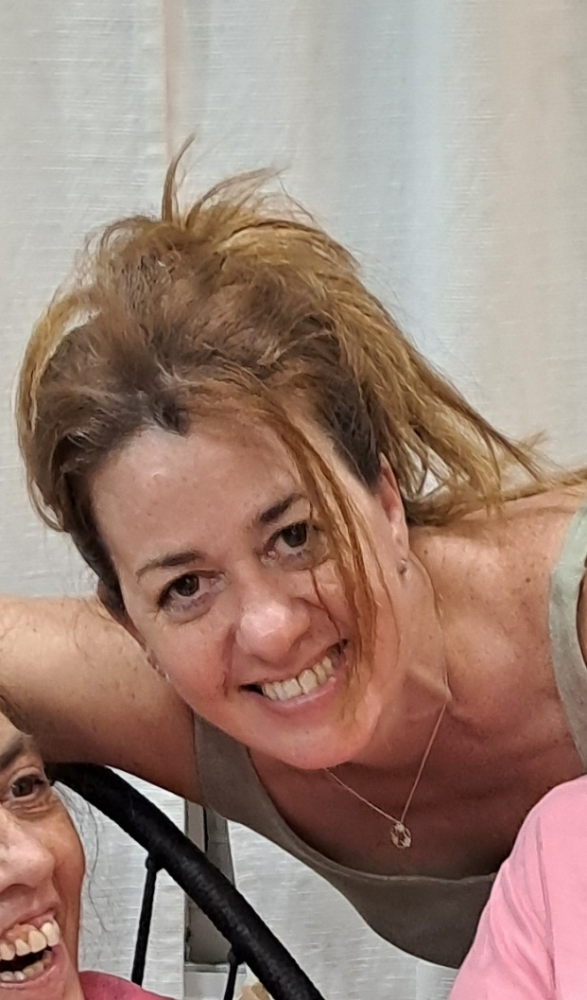

Quiénes somos
Somos un grupo de investigadores y docentes pertenecientes a distintas universidades nacionales. Nos une el compromiso con el bienestar de quienes día a día enfrentan situaciones de alto impacto emocional: rescatistas, personal militar y policial.
Nuestra asociación civil sin fines de lucro nace con el objetivo de brindar psicoterapia idónea, adaptada y científicamente validada, ajustada a las características particulares de esta población.
Nuestra misión
Cuidar la salud mental y el bienestar del personal que actúa en contextos de emergencia y riesgo, desarrollando herramientas innovadoras basadas en neurociencias y en inteligencia artificial.
Autoridades Institucionales

Dra. Vanina Fernández
Presidenta y Socia Fundadora
Abogada (UBA)
Dr. Diego Piñeyro
Secretario y Socio Fundador
Desarrollador de la Técnica PASER- Prof. Adjunto Metodología de la Investigación (UBA)
- Director Lab. Neurociencias e IA (Fac. del Ejército)
Equipo de Profesionales
Lic. Alejandro Masín
Psicólogo (UBA)
Terapeuta Cognitivo Conductual
Lic. Sebastián Soria Oroza
Psicólogo (UBA)
Terapeuta Cognitivo Conductual
Lic. Lucía Romero
Psicóloga (UAI)
Especialista en EMDR
Lic. Antonella Oliva
Psicóloga (UBA)
Especialista en TCC

Lic. Mara Hahn
Especialista en Emergentología
TCC y Trastornos de Ansiedad
Lic. Abel Cunto
Psicólogo (UBA)
Becario Doctoral, Instructor en CRM por la FA (INMAE) Diplomado en Psicología de la Emergencia y Apoyo Humanitario (AASM) Docente UBA
Lic. Verónica Di Costanzo
Psicóloga (UBA)
Especialista en Prevención del Suicidio
Lic. Candela Morales
Psicóloga (UBA)
Especialista en Trastornos e la Memoria

Mg. Susana Ukutsu
Psicóloga (UBA)
Magíster Especialista en Psicooncología